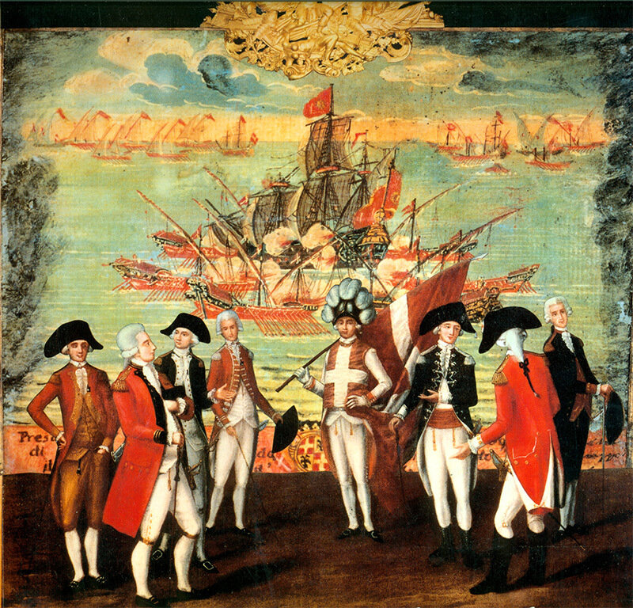

Разовьем несколько тему, касающуюся комплектования личного состава галер Франции XVI-XVII веков. По некоторым соображениям изложение построим таким образом: начнем с характеристики офицерского корпуса, затем перейти к описанию шиурмы (гребцов) и солдат на борту галер, и, наконец, снова вернемся к командному составу. При этом будем опираться на свидетельства галерного капитана Пантеро Пантера, исследование У.Бэмфорда, которое мы упоминали выше, труды французского адмирала де Гравьера и ряд других источников, ссылки на которые будем давать по ходу изложения.

Офицеры ордена св.Иоанна Иерусалимского вокруг своего знаменосца (gonfalonier)
Служба на галерах давала шанс молодому аристократу добиться известности и славы. В некоторых отношениях галеры предоставляли даже больше возможностей проявить личную доблесть, чем парусные корабли. Тактика галерной войны традиционно требовала сближения с противником и ведения рукопашной схватки; такие действия были более привлекательны для жаждущей славы молодежи, чем обмен пушечным огнем на дальнем расстоянии. Конечно, к офицерской службе на галерах молодых людей поощряли традиции рода и наследственные предпочтения некоторых французских семей.
Служба в королевском Галерном корпусе была привлекательной и по религиозным соображениям. В шестнадцатом-семнадцатом веках почти все христианские церкви на Западе выдвинули лозунг “защиты христианской веры” и выступили за использование силы против мусульман, вероотступников и лиц, бежавших или высланных из Европы, которые жили в Северной Африке и восточном Средиземноморье и попадали в общую категорию «неверных». Такие люди повсеместно считались общими врагами всех христиан. Королевские галеры и другие силы вели боевые действия против неверных почти каждый год. Поэтому французские аристократы, влиятельные семьи и церковь, как католики так и протестанты, объединились для выполнения общих обязанностей «всех добрых христиан», служа на галерах, как это делали поколения их предков. Офицеры-католики и гугеноты служили вместе на французских эскадрах, порой даже на одном судне или галере на протяжении 60-х и 70-х годов XVII века, пока король своим решением не исключил с морской службы всех людей (за небольшим исключением), которые не обратились в католичество.
Были также и менее возвышенные мотивы для службы на французских королевских галерах. Некоторые люди считали, что шансы для продвижения по службе на галерах исключительно высоки. Так без сомнения было и на самом деле в шестидесятые годы, когда расширение флота Людовика создавало острую потребность в дополнительных офицерских кадрах. Более того, офицерам на галерах платили больше, чем офицерам на парусном флоте (в отличие от солдат, где все было наоборот; но об этом позже). Привлекало также то, что галеры, в отличие от парусных судов, выходили в море в основном только летом. Еще более привлекательным был тот факт, что галеры находились в кампании практически каждый год. Офицеры же парусных кораблей порой оставались без дела по несколько лет подряд. Короче, некоторых людей, должно быть, привлекала регулярность службы на гребных судах, хорошая оплата, и длинный отпуск ежегодно, а также то обстоятельство, что галеры никогда не совершали «этих ужасных двух-трехлетних походов в далекие моря»( Ernest Lavisse, «Sur les galeres du roi»).
Таким образом, по различным мотивам целые поколения французских аристократов отдавали предпочтение службе на галерах по сравнению с другими видами военной службы. Когда в шестидесятые годы была предпринята реорганизация и расширение военного флота Людовика XIV, потребовалось большее количество офицеров. Желание служить высказали многие аристократы, не имеющие никакой подготовки, но Людовику требовались опытные офицеры, чтобы принять командование пополнением флота вместо уходящих в отставку ветеранов (таких, как Маркиз де Терне (Ternes), который командовал эскадрой из одиннадцати галер, направленной против Северной Африки в 1668, когда ему было 92 года! (Masson, "Les Galeres de France") и заменить некоторых иностранных офицеров. Более молодые компетентные капитаны были нарасхват.
Вплоть до шестидесятых годов король разрешал командующим эскадрами и флотом совместно с интендантами портов выдавать патенты лейтенантов и младших лейтенантов для каждой кампании. Вместе с тем, многие капитаны были назначены и аттестованы непосредственно двором. Некоторые офицеры переводились на галеры с парусного флота; другие пришли из армии – у них была неплохая квалификация, учитывая то, что галеры имели-таки некоторое отношение к военным делам. Примечательно, что в течение шестидесятых годов в Галерный корпус вступило очень мало рыцарей мальтийского ордена. Их сдерживала, возможно, вовлеченность ордена в критскую кампанию, а также трения, которые существовали в то время в отношениях Людовика XIV с папой и Великим Магистром мальтийского ордена. Когда было принято решение о дальнейшем расширении Галерного корпуса, Кольбер высказал неудовольствие тем, что в Корпусе было слишком мало офицеров «с особыми достоинствами». «Особыми достоинствами» он считал следующие: чтобы офицеры были французами по рождению, происходили из аристократических семей и имели опыт службы на галерах. Это сочетание качеств можно было встретить лишь у немногих кандидатов, если не считать рыцарей мальтийского ордена. Людовик в 1663 году направил на Мальту миссию для переговоров о получении материальной и технической помощи для французского флота. Эта миссия пыталась склонить рыцарей ордена-французов к офицерской службе на галерах короля. Но тогда едва ли удалось заполучить хоть одного человека, так как орден глубоко увяз в кампании против турок на Крите. В 1668 г. Кольбер, получив доклады о том, что галеры ордена отлично проявили себя в недавних действиях против турок, выискивал среди рыцарей ордена - участников этой кампании французские имена. Еще одним свидетельством того, что Кольбер отдавал предпочтение рыцарям мальтийского ордена служит его общая инструкция интенданту Марселя принимать на службу французских рыцарей, «которые командовали или сейчас командуют галерами» для королевского Галерного корпуса. (У.Бэмфорд).
Формирования ордена св.Иоанна, конечно, включали самую крупную группу подготовленных офицеров галер, французов по рождению. Аристократические семьи во Франции в течение многих поколений остро соперничали за право послать младших сыновей служить на галерах ордена св. Иоанна. В редких случаях люди без титулованных предков допускались в орден, только лишь если их служба или связи могли подтвердить, что они заслужили право и честь быть посвященными в благородный ранг. Фактически, однако, орден и его галеры были замкнутым заповедником для европейских христиан-аристократов, прежде всего христиан римско-католической веры. Историк Ордена аббат де Верто (Abbé de Vertot), работавший в восемнадцатом веке, говорил о его членах как «милиции, составленной из самых благородных кровей христианского мира». Они считали себя, а в некоторых кругах и почитались таковыми, «элитой христианского мира» (Abbé Rene de Vertot, Histoire des Chevaliers Hospitallers de Saint Jean, 7 vols. Paris, 1761. V, 301.) Их орден являлся школой подготовки офицеров-аристократов, настоящей школой морской войны. Конечно, подготовка имела целью обеспечение кадрами силы ордена, но многие «выпускники» на самом деле покидали Мальту ради службы в войсках христианских правителей держав Средиземноморья.
Приведем краткую характеристику мальтийского флота, имея в виду в последующем дать подробный анализ и развернутое описание галерной составляющей военно-морских сил ордена св. Иоанна.
Общую идею военной и военно-морской доктрины мальтийского ордена можно коротко сформулировать двумя словами: «щит и меч». Щитом ордена являлись мощные укрепления, построенные вокруг его баз на Родосе, а затем на Мальте, а также других его территориях, таких как Кос, Галикарнас и Триполи. «Щит» должен был обеспечить отражение десанта и обеспечение безопасности центрального ядра ордена. «Мечом» являлся относительно небольшой, но эффективный военно-морской флот. При ограниченной численности флота от каждого отдельного корабля и его экипажа требовалась высокая боеспособность, а от его командира – мастерство и тактическая грамотность. Мальтийский флот удовлетворял этим критериям: неоднократно в источниках того времени указывалось, что галеры Мальты были самыми быстрыми, лучше оснащенными и укомплектованными лучшими экипажами на Средиземном море.
Планирование, снабжение, управление, обеспечение личным составом, распределение обязанностей внутри флота осуществлялось двумя комитетами, известными как congregazioni. В эти комитеты избирались высшие офицеры ордена, которые несли ответственность за все политические, финансовые и административные решения, касающиеся кораблей мальтийского флота. Первый комитет отвечал за галеры, а второй, учрежденный в XVIII веке, за парусные корабли – vascelli. Система набора и ротации личного состава, известная как caravan , предусматривала четыре шестимесячных боевых похода для всех кандидатов в рыцари прежде чем они могли стать полноценными членами ордена. Молодой аристократ одной из восьми национальностей (Langues) на первом этапе должен был выдержать конкурс у себя на родине. После этого новобранец оплачивал свой переход на кораблях ордена, которые доставляли его в монастырь. По завершении срока послушничества и принятия обета воздержания, смирения и нищенствования, кандидат получал одеяние с восьмиугольным белым крестом. Только после этой стадии новобранец направлялся на караваны (так, по О.Жалю, называлась не только процедура, но и галеры, на которых она проходила), где он изучал навигацию и приемы морского боя как солдат, начальник артиллерии, офицер флота и, если ему уже исполнилось 25 лет, как капитан галеры. Конечной целью всех членов ордена св. Иоанна было получение патента, своеобразного общеевропейского свидетельства на право занимать командные должности на флоте.
Устав ордена предусматривал закрепление некоторых командных постов за представителями определенных национальностей (Langues). Так Адмиралом мог стать только итальянец. На практике Адмирал был министром флота и не исполнял оперативных функций, которые возлагались на Генерал-капитана. Последний не должен был быть уроженцем Италии. Основной административной и оперативной единицей флота ордена являлась эскадра галер. Следует отметить, что хотя на Мальте были свои верфи, основная часть галер ордена была построена во Франции.
Итак, чтобы достичь звания капитана в ордене рыцарь обычно должен быть старше двадцати пяти лет от роду, иметь по меньшей мере лет десять служебного стажа и опыт участия не менее чем в трех кампаниях. К сожалению для командования морскими силами Франции, французы, которые достигли капитанства на галерах ордена, не желали переходить на службу в том же или даже более высоком ранге и на более высокое жалованье на галеры короля Франции. Этот факт может иметь различные объяснения. На первом месте находилась большая вероятность того, что ветераны, стремящиеся получить разрешение покинуть Мальту и перейти на службу Франции, получат прохладный прием и скорее всего отрицательный ответ у Великого Магистра ордена. Более того, некоторые рыцари (возможно даже многие из них) придерживались взглядов, подобных взглядам шевалье Люка де Буайе д’Аржана (Luc de Boyer d’Argens), идеи которого о религиозной ответственности рыцарей были, вероятно, более широко распространены в тот более ранний период истории, о котором мы говорим, чем во времена самого д’Аржана (его работа Reflexions politiques sur I'etat et les devoirs des Chevaliers de Malthe вышла в Гааге в 1739 г.) Д’Аржан категорически считал, что его обязательства по службе ордену предпочтительней, чем служба любому светскому правителю. Он умолял своих собратьев по ордену обдумать последствия ухода с Мальты на боевую службу к европейским монархам:
«Когда человек становится рыцарем Мальтийского ордена, он стремится выполнять главные обязанности [рыцаря], или по меньшей мере он должен иметь это стремление, даже если явно и не испытывает его. Каковы же эти обязанности? Защищать Веру против Неверных, уничтожать пиратов и магометан. [Но] когда он отправляется воевать против французов, немцев и англичан, он не выполняет этих обязанностей. Он клялся сражаться против неверных, а не пускать кровь христиан или душить своих братьев. …Если вы внимательно посмотрите, сколько несправедливых войн ведут христианские правители, сколько людей они посылают на смерть, иногда просто для удовлетворения своей личной ненависти или амбиций, вы не можете не дорожить службой государству [Ордена], которое ведет войны только для защиты веры и, сторонясь участия в преступных спорах христиан, сожалеет о страсти, так неуместно связанной с понятием славы и любви к Отечеству.»
(Цит. по У.Бэмфорду.)
Мы не имеем возможности узнать, сколько рыцарей Мальтийского ордена – французов по рождению придерживалось таких взглядов. В принципе, их , вероятно, придерживались Великие Магистры того времени, хотя их публичная политика была по необходимости гибкой. Когда ветераны покидали Мальту ради светской службы, руководство военными формированиями ордена ослаблялось и целеустремленность молодых рыцарей подрывалась дурными примерами. Ни один сознательный рыцарь не мог чувствовать себя полностью свободным от сомнений, переходя на службу французским королям. Короче, по различным причинам не каждый рыцарь мальтийского ордена мог или хотел служить на галерах Людовика XIV. Отсюда следует, что ветеранов-добровольцев было мало.
В 1669 году Кольбер и Людовик опустили планку своих требований к кандидатам на капитанские должности. Кольбер дал понять, что мальтийские рыцари французского происхождения не обязательно должны были командовать галерами; достаточно, чтобы они были способны командовать. При этих условиях было рекрутировано дополнительное число рыцарей на командные должности во французском флоте, а также значительное их число было аттестовано на подчиненные должности. В 1672 году Кольбер издал декрет, чтобы все кандидаты на офицерские должности в то время имели соответствующий опыт; они «должны были служить на мальтийских галерах и должны быть рыцарями мальтийского ордена… Его Величество желает иметь на борту своих галер наибольшее возможное число мальтийских рыцарей.» (Цит. по У.Бэмфорду). Имелось несколько возможных причин появления этого декрета. Во-первых, рыцари были конечно же опытными офицерами. Во-вторых, они могли принести на королевскую службу свой большой авторитет борцов за Веру, которые поклялись, если потребуется, умереть за христианство. Возможно, была надежда, что их присутствие в Галерном корпусе может способствовать изгнанию из благочестивых умов мысли о том, что Людовик XIV может стать другом султана, с которым он как раз тогда(1673 г.) вел переговоры о новом Договоре.
В конечном итоге, рыцари ордена св.Иоанна составили костяк Галерного корпуса Франции. После 1670 г. рыцари командовали примерно половиной всех галер Людовика. Многие другие иоанниты служили в качестве младших офицеров. Например, в 1672 году в одном из списков из двадцати одного офицера, которые командовали галерами Людовика, по крайней мере одиннадцать были членами ордена. Два года спустя, в 1674 г., по меньшей мере шестнадцать из тридцати командирских должностей в эскадре, подготовленной для кампании, были заняты мальтийскими рыцарями. В это время, кажется, только один капитан галеры, сьёр Спане (Spanet), не был ни членом знатного дворянского рода, ни членом ордена св. Иоанна. Вскоре после этого Спане был разжалован (за дело, считает У.Бэмфорд) и изгнан из Корпуса. Предпочтения, оказываемые рыцарям при приеме на службу и продвижении по служебной лестнице в начале семидесятых годов привели к преобладанию числа рыцарей в Корпусе к 1680 году. Процент рыцарей к этому времени достиг своей высшей точки. Но примечательно, что члены ордена никогда не монополизировали высшие офицерские должности в Корпусе. А в девяностые годы их число даже несколько снизилось.